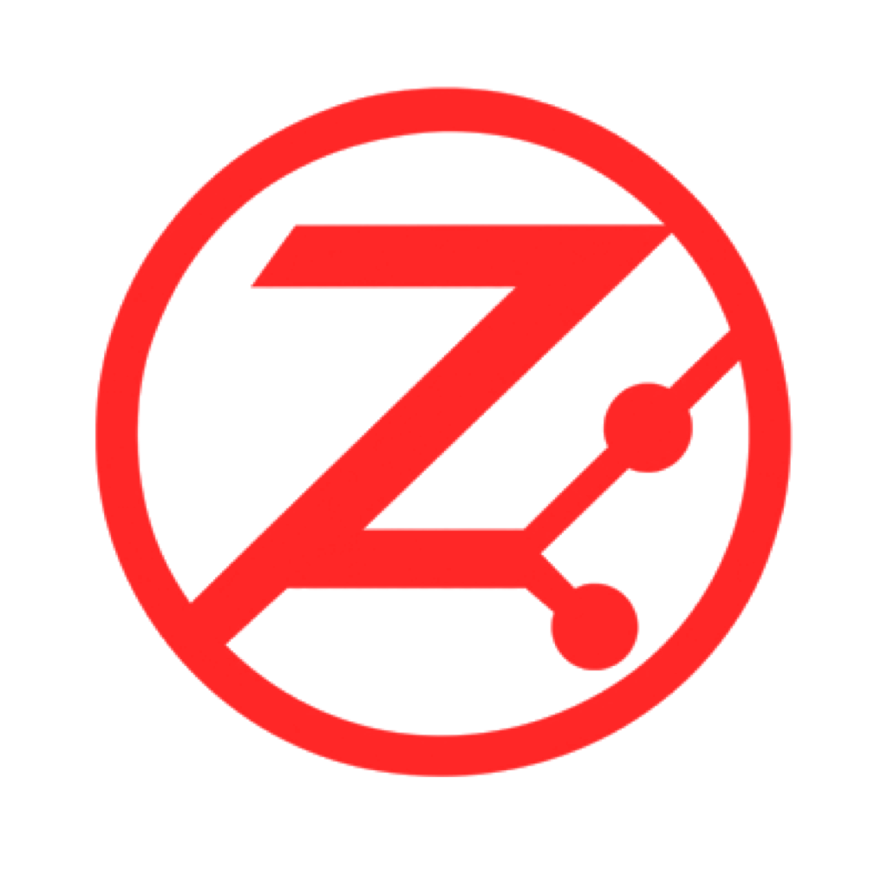

zhivex-ai-sdk
Zhivex AI SDK
The TypeScript SDK for governed AI agents.
Budgets
Redaction
Audit records
Signed approvals
const
agent
=
applySafetyPolicyToAgent
(
createAgent
({
model
}),
createProductionSafetyPolicy
()
);
const
run
=
await
runAgent
(
agent
, {
prompt
:
"Draft a reply."
});
createAgentRunLedger
(
run
.
state
);
// no raw prompt stored
bun add @zhivex-ai/sdk
OpenAI · Anthropic · Gemini · Bedrock · Qwen · +9 more